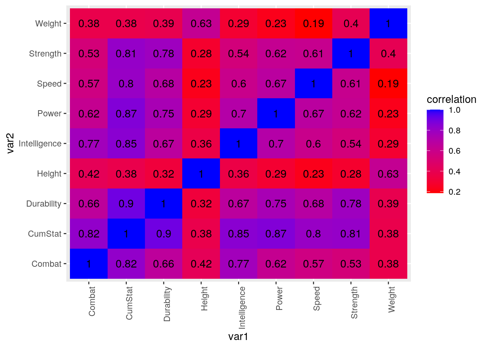
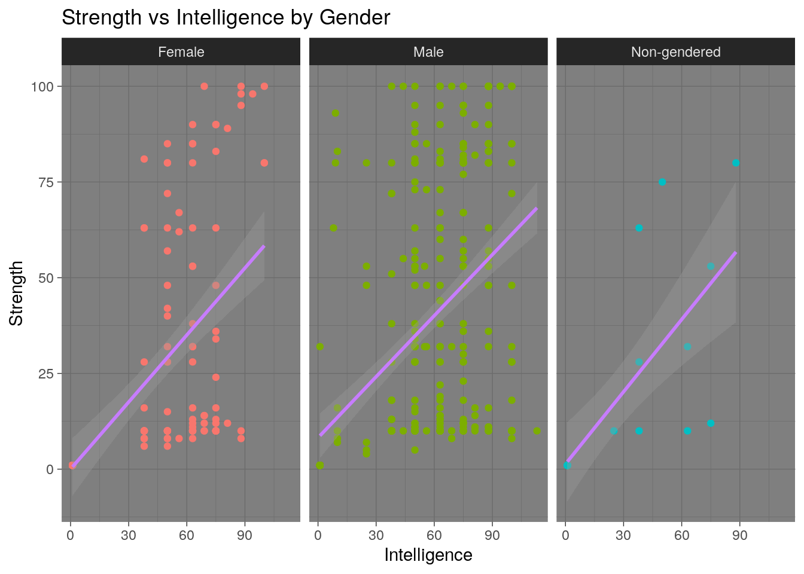
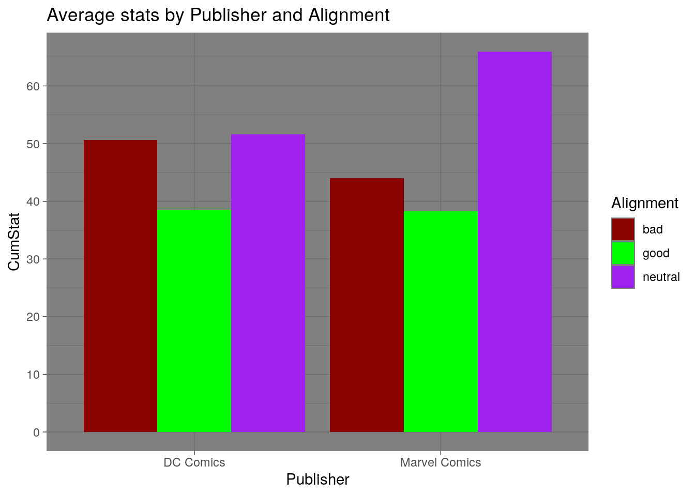
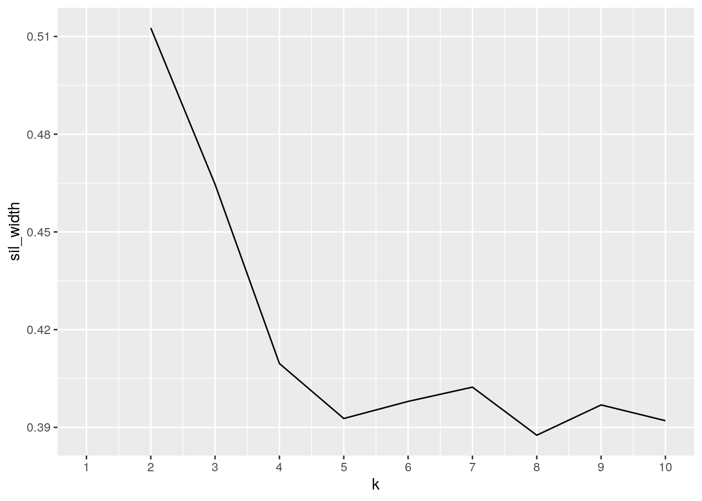
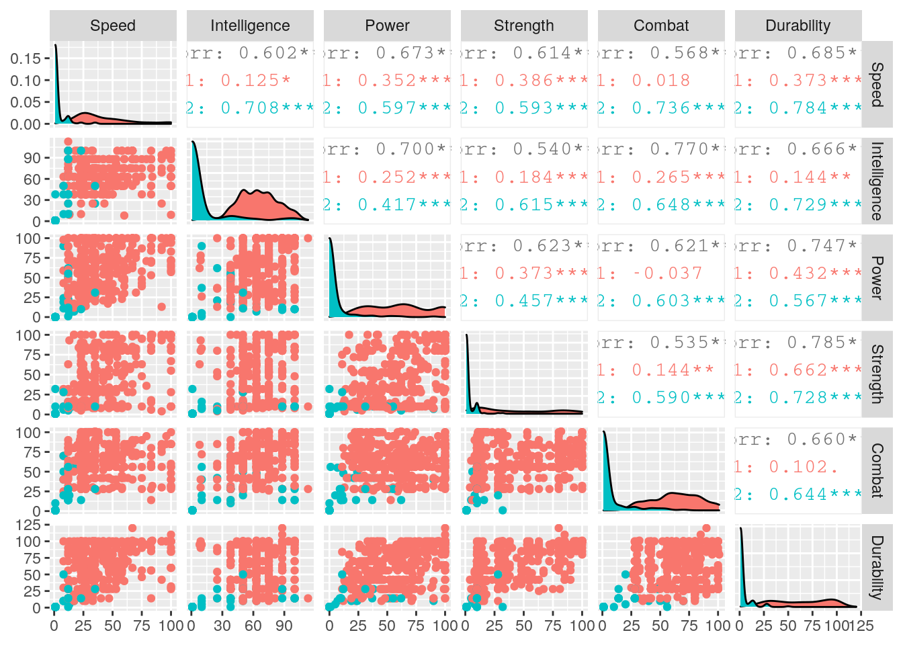

...
I have chosen to explore two datasets containing information on comic book cahracters, specifically Marvel and DC comic characters. I started to think of datasets that could be compatible and Marvel and DC immediately came to mind. I've been a fan of marvel and have had several arguments with friends on which universe is more powerful. Now I can actually find out for myself. I found datasets on forum in kaggle a site were people post their projects for public veiwing and use. I was able to download to different datatets as cvs after creating an account with the site.
One of the two datasets contains biographical infomation like race, gender, eye color, ect. This dataset this dataset contains characters from outside the Marvel or DC comic univeses so for the purposes of this project I have filtered those out. The second dataset contians the abilty statitistics of DC and Marvel comic characters. These stats include strength, durability, intelligence, speed, power and combat. I plan to explore the relationships between any of these given abilities and biographical information like race or gender. I also plan to explore some of the differences compostion and strength among the two comic universes.
library(tidyverse)
chr_stats <- read_csv("~/lab/charcters_stats.csv")
chr_bio <- read_csv("~/lab/marvel_characters_info.csv")
head(chr_bio)## # A tibble: 6 x 11
## ID Name Alignment Gender EyeColor Race HairColor Publisher SkinColor
## <dbl> <chr> <chr> <chr> <chr> <chr> <chr> <chr> <chr>
## 1 0 A-Bo… good Male yellow Human No Hair Marvel C… -
## 2 1 Abe … good Male blue Icth… No Hair Dark Hor… blue
## 3 2 Abin… good Male blue Unga… No Hair DC Comics red
## 4 3 Abom… bad Male green Huma… No Hair Marvel C… -
## 5 4 Abra… bad Male blue Cosm… Black Marvel C… -
## 6 5 Abso… bad Male blue Human No Hair Marvel C… -
## # … with 2 more variables: Height <dbl>, Weight <dbl>chrtidy <- chr_bio %>% pivot_longer(c("Height", "Weight"))
head(chrtidy)## # A tibble: 6 x 11
## ID Name Alignment Gender EyeColor Race HairColor Publisher SkinColor
## <dbl> <chr> <chr> <chr> <chr> <chr> <chr> <chr> <chr>
## 1 0 A-Bo… good Male yellow Human No Hair Marvel C… -
## 2 0 A-Bo… good Male yellow Human No Hair Marvel C… -
## 3 1 Abe … good Male blue Icth… No Hair Dark Hor… blue
## 4 1 Abe … good Male blue Icth… No Hair Dark Hor… blue
## 5 2 Abin… good Male blue Unga… No Hair DC Comics red
## 6 2 Abin… good Male blue Unga… No Hair DC Comics red
## # … with 2 more variables: name <chr>, value <dbl>chrtidy %>% pivot_wider(names_from = "name", values_from = "value")## # A tibble: 734 x 11
## ID Name Alignment Gender EyeColor Race HairColor Publisher SkinColor
## <dbl> <chr> <chr> <chr> <chr> <chr> <chr> <chr> <chr>
## 1 0 A-Bo… good Male yellow Human No Hair Marvel C… -
## 2 1 Abe … good Male blue Icth… No Hair Dark Hor… blue
## 3 2 Abin… good Male blue Unga… No Hair DC Comics red
## 4 3 Abom… bad Male green Huma… No Hair Marvel C… -
## 5 4 Abra… bad Male blue Cosm… Black Marvel C… -
## 6 5 Abso… bad Male blue Human No Hair Marvel C… -
## 7 6 Adam… good Male blue - Blond NBC - He… -
## 8 7 Adam… good Male blue Human Blond DC Comics -
## 9 8 Agen… good Female blue - Blond Marvel C… -
## 10 9 Agen… good Male brown Human Brown Marvel C… -
## # … with 724 more rows, and 2 more variables: Height <dbl>, Weight <dbl>My data was already tidy so in this section here i just untidy it by pivoting heigh and weight longer where each character now had an extra row. then i pivoted them wider to fix it.
chr_bio <- chr_bio %>% filter(Publisher %in% c("Marvel Comics",
"DC Comics"))
full_chrdata <- inner_join(chr_bio, chr_stats, by = "Name")
full_chrdata <- full_chrdata %>% select(-Alignment.y)
full_chrdata <- full_chrdata %>% rename(Alignment = Alignment.x)
full_chrdata <- full_chrdata %>% distinct(Name, .keep_all = T)
full_chrdata$Alignment[full_chrdata$Alignment == "-"] <- "neutral"
full_chrdata$Gender[full_chrdata$Gender == "-"] <- "Non-gendered"
full_chrdata$Race[full_chrdata$Race == "-"] <- "Unkown"
full_chrdata## # A tibble: 503 x 18
## ID Name Alignment Gender EyeColor Race HairColor Publisher SkinColor
## <dbl> <chr> <chr> <chr> <chr> <chr> <chr> <chr> <chr>
## 1 0 A-Bo… good Male yellow Human No Hair Marvel C… -
## 2 2 Abin… good Male blue Unga… No Hair DC Comics red
## 3 3 Abom… bad Male green Huma… No Hair Marvel C… -
## 4 4 Abra… bad Male blue Cosm… Black Marvel C… -
## 5 7 Adam… good Male blue Human Blond DC Comics -
## 6 9 Agen… good Male brown Human Brown Marvel C… -
## 7 10 Agen… good Male - Unko… - Marvel C… -
## 8 11 Air-… bad Male blue Unko… White Marvel C… -
## 9 13 Alan… good Male blue Unko… Blond DC Comics -
## 10 16 Alfr… good Male blue Human Black DC Comics -
## # … with 493 more rows, and 9 more variables: Height <dbl>, Weight <dbl>,
## # Intelligence <dbl>, Strength <dbl>, Speed <dbl>, Durability <dbl>,
## # Power <dbl>, Combat <dbl>, Total <dbl>Here I performed a filter on the character bio dataset before joining becuase the set contianed characters from star wars, wildstorm, and other variuos comic and i only wanted marvel and dc comic character. then i perfomed an inner join with the stats set so it would also remove all the cases in the stats set that werent marvel or dc. the stats set did not have this distinction in it but by inner joining with the filtered bio set only character from marvel or dc would remain.both datasets also had alignment columns o i deleted one and remaned the other. there were also several duplicate name entries that needed to be removed in order to not skew the data. The datasets also had the ir NAs poses as "-". where applicable i changed those NAs into a new catagory.Where there was a "-"in gender i made it "Non-gendered", in alignment i made it "neutral", and in race i made it "Unknown".
# creating new column
library(kableExtra)
full_chrdata <- full_chrdata %>% mutate(CumStat = Total/6)
full_chrdata <- full_chrdata %>% relocate(CumStat, .after = Weight)I deceded to make a new column that put their cotal stats on the same scale. i did so by taking the their total stat column by the total number of different stats which was 6. i also rearranged the column so that CumStat would appear earlier becuase i will be doing a lot summary stats based on overall stats
# top 10 stongest characters overall?
full_chrdata %>% select(Name, Alignment, Race, Publisher, CumStat) %>%
top_n(10, CumStat) %>% arrange(desc(CumStat)) %>% kable()| Name | Alignment | Race | Publisher | CumStat |
|---|---|---|---|---|
| Martian Manhunter | good | Martian | DC Comics | 96.83333 |
| General Zod | bad | Kryptonian | DC Comics | 96.50000 |
| Superboy-Prime | bad | Kryptonian | DC Comics | 96.50000 |
| Superman | good | Kryptonian | DC Comics | 96.50000 |
| Amazo | bad | Android | DC Comics | 95.83333 |
| Stardust | good | Unkown | Marvel Comics | 94.66667 |
| Galactus | neutral | Cosmic Entity | Marvel Comics | 92.16667 |
| Bizarro | neutral | Bizarro | DC Comics | 91.66667 |
| Dormammu | bad | Unkown | Marvel Comics | 91.00000 |
| Thor | good | Asgardian | Marvel Comics | 91.00000 |
First i wanted to figure out who were the stringest characters were regardlaess of any group, martian manhunter of DC comic has the highest cummalative stat rating of 96.83333
# which series has better stats on average
full_chrdata %>% select(-ID, -Height, -Weight, -Total) %>% group_by(Publisher) %>%
summarise_if(is.numeric, mean, na.rm = T) %>% arrange(desc(CumStat)) %>%
kable()| Publisher | CumStat | Intelligence | Strength | Speed | Durability | Power | Combat |
|---|---|---|---|---|---|---|---|
| DC Comics | 42.47475 | 51.05455 | 32.25455 | 31.87273 | 45.84242 | 46.89091 | 46.93333 |
| Marvel Comics | 40.64448 | 47.32249 | 32.19231 | 28.83136 | 45.85503 | 42.48225 | 47.18343 |
i was sad to find out that when you compare all characters of DC to Marvel that that DC does have the best average stats of the two but marvel does have higher avergae durability and combat.
# which series has more deviation in their stats
full_chrdata %>% select(-ID, -Height, -Weight, -Total) %>% group_by(Publisher) %>%
summarise_if(is.numeric, sd, na.rm = T) %>% kable()| Publisher | CumStat | Intelligence | Strength | Speed | Durability | Power | Combat |
|---|---|---|---|---|---|---|---|
| DC Comics | 28.10346 | 33.59084 | 34.98373 | 28.99015 | 37.17903 | 35.86833 | 32.23185 |
| Marvel Comics | 27.08614 | 31.58211 | 32.59246 | 24.08833 | 35.99645 | 33.73357 | 32.38743 |
when looking at the deviation of the two sereis satas dc also seems to have a greater average vairation in the characters total skills, and every solo catagory except for combat
# which gender has better stats overall
full_chrdata %>% select(-ID, -Height, -Weight, -Total) %>% group_by(Gender) %>%
summarise_if(is.numeric, mean, na.rm = T) %>% arrange(desc(CumStat)) %>%
kable()| Gender | CumStat | Intelligence | Strength | Speed | Durability | Power | Combat |
|---|---|---|---|---|---|---|---|
| Male | 44.71124 | 51.68895 | 35.67151 | 32.38372 | 50.76453 | 47.61628 | 50.14244 |
| Female | 35.86375 | 44.32847 | 25.89051 | 25.40876 | 36.83212 | 39.05839 | 43.66423 |
| Non-gendered | 20.55303 | 25.68182 | 17.50000 | 17.40909 | 25.18182 | 16.59091 | 20.95455 |
when you compare the overall stats by gender it seems that males have the best overall, females the second best and non-gendered the worst. this trend is appears to happen in every individual stat catagory as well.
# how many character of each gender are there
full_chrdata %>% group_by(Gender) %>% summarise(n_distinct(Name)) %>%
kable| Gender | n_distinct(Name) |
|---|---|
| Female | 137 |
| Male | 344 |
| Non-gendered | 22 |
i wanted to know the gender makeup of all the comic characters and it seems that males domainte the comic universe, with females second and nongendered charaters last
# which of these three races has better stats overall
full_chrdata %>% select(-ID, -Height, -Weight, -Total) %>% filter(Race %in%
c("Alien", "Human", "Asgardian")) %>% group_by(Race) %>%
summarise_if(is.numeric, mean, na.rm = T) %>% arrange(desc(CumStat)) %>%
kable()| Race | CumStat | Intelligence | Strength | Speed | Durability | Power | Combat |
|---|---|---|---|---|---|---|---|
| Asgardian | 71.62500 | 70.50000 | 74.25000 | 58.50000 | 80.25000 | 76.00000 | 70.25000 |
| Alien | 67.03333 | 67.80000 | 64.00000 | 49.00000 | 77.00000 | 82.20000 | 62.20000 |
| Human | 42.05556 | 55.68992 | 24.63566 | 30.70543 | 43.18605 | 41.62015 | 56.49612 |
i wanted to look at some stats via race but there were over 40 races represnted in this data so just choose to do three of my favorites. of these Asgardians have the best stats, aliens have the second best and humans the worst. this trend is the same in all the indivudual sat catagories except power, where aliens have the best power stats
# which race have highest and lowest stats
full_chrdata %>% select(-ID, -Height, -Weight, -Total) %>% filter(Race %in%
c("Alien", "Human", "Asgardian")) %>% group_by(Race) %>%
summarise_if(is.numeric, max, na.rm = T) %>% kable()| Race | CumStat | Intelligence | Strength | Speed | Durability | Power | Combat |
|---|---|---|---|---|---|---|---|
| Alien | 90.83333 | 88 | 100 | 84 | 120 | 100 | 100 |
| Asgardian | 91.00000 | 88 | 100 | 92 | 100 | 100 | 85 |
| Human | 89.66667 | 100 | 100 | 100 | 101 | 100 | 100 |
full_chrdata %>% select(-ID, -Height, -Weight, -Total) %>% filter(Race %in%
c("Alien", "Human", "Asgardian")) %>% group_by(Race) %>%
summarise_if(is.numeric, min, na.rm = T) %>% kable()| Race | CumStat | Intelligence | Strength | Speed | Durability | Power | Combat |
|---|---|---|---|---|---|---|---|
| Alien | 33.3333333 | 50 | 28 | 8 | 30 | 59 | 25 |
| Asgardian | 45.5000000 | 50 | 57 | 25 | 52 | 19 | 56 |
| Human | 0.8333333 | 1 | 1 | 1 | 1 | 0 | 1 |
i then wanted to see which race had the best and worst of each stat. An Asgardian had the best cummaltive stat, A Human had the best intelligence, allthree races have at least one characteer with strength rating of 100, a human has the highest speed rating, an alien had the highest durabilty rating, all three races had at least one character with a power of 100, and alien and human tied with a rating of 100 for combat.its seem that even though as gardians had the best average stats their are members of different races who have powers that eclipse those of asgardians. there were also rating that went over 100 in durabilty catagory suggesting that some characters have extraordinary surviabilty attributes. humans also had the lowest score in every stat catagory.
# Which univserse and allighnment has the best average stats
full_chrdata %>% select(-ID, -Height, -Weight, -Total) %>% filter(Alignment %in%
c("neutral", "bad", "good")) %>% group_by(Publisher, Alignment) %>%
summarise_if(is.numeric, mean, na.rm = T) %>% arrange(desc(CumStat)) %>%
kable()| Publisher | Alignment | CumStat | Intelligence | Strength | Speed | Durability | Power | Combat |
|---|---|---|---|---|---|---|---|---|
| Marvel Comics | neutral | 65.94444 | 60.44444 | 64.44444 | 48.66667 | 83.55556 | 76.11111 | 62.44444 |
| DC Comics | neutral | 51.62963 | 60.00000 | 38.11111 | 38.11111 | 60.33333 | 50.77778 | 62.44444 |
| DC Comics | bad | 50.61742 | 66.81818 | 42.11364 | 33.86364 | 53.86364 | 52.47727 | 54.56818 |
| Marvel Comics | bad | 44.02551 | 50.65306 | 38.09184 | 29.97959 | 51.58163 | 46.42857 | 47.41837 |
| DC Comics | good | 38.54018 | 44.14286 | 27.91071 | 30.58929 | 41.52679 | 44.38393 | 42.68750 |
| Marvel Comics | good | 38.22439 | 45.39827 | 28.43290 | 27.57143 | 41.95671 | 39.49784 | 46.48918 |
when grouping by comic series and alignment of the character it seems that neutral marvel characters have the best average cummulative stats, but this trend is not true across all individual stats. DC villians seem to be the most intelligent on average, and Marvel and DC's neutral characters have the same average Combat score.
# Correlation matrix
cormat <- full_chrdata %>% select(-ID, -Total) %>% select_if(is.numeric) %>%
cor(use = "pair")
cormat <- cormat %>% as.data.frame %>% rownames_to_column("var1") %>%
pivot_longer(-1, "var2", values_to = "correlation")
cormat %>% kable()| var1 | var2 | correlation |
|---|---|---|
| Height | Height | 1.0000000 |
| Height | Weight | 0.6277353 |
| Height | CumStat | 0.3760874 |
| Height | Intelligence | 0.3567110 |
| Height | Strength | 0.2782732 |
| Height | Speed | 0.2292612 |
| Height | Durability | 0.3220637 |
| Height | Power | 0.2903738 |
| Height | Combat | 0.4154456 |
| Weight | Height | 0.6277353 |
| Weight | Weight | 1.0000000 |
| Weight | CumStat | 0.3757983 |
| Weight | Intelligence | 0.2914632 |
| Weight | Strength | 0.4029848 |
| Weight | Speed | 0.1863433 |
| Weight | Durability | 0.3878277 |
| Weight | Power | 0.2279776 |
| Weight | Combat | 0.3772350 |
| CumStat | Height | 0.3760874 |
| CumStat | Weight | 0.3757983 |
| CumStat | CumStat | 1.0000000 |
| CumStat | Intelligence | 0.8453725 |
| CumStat | Strength | 0.8142718 |
| CumStat | Speed | 0.8036489 |
| CumStat | Durability | 0.9047656 |
| CumStat | Power | 0.8658931 |
| CumStat | Combat | 0.8212382 |
| Intelligence | Height | 0.3567110 |
| Intelligence | Weight | 0.2914632 |
| Intelligence | CumStat | 0.8453725 |
| Intelligence | Intelligence | 1.0000000 |
| Intelligence | Strength | 0.5402949 |
| Intelligence | Speed | 0.6020591 |
| Intelligence | Durability | 0.6662061 |
| Intelligence | Power | 0.6995420 |
| Intelligence | Combat | 0.7695660 |
| Strength | Height | 0.2782732 |
| Strength | Weight | 0.4029848 |
| Strength | CumStat | 0.8142718 |
| Strength | Intelligence | 0.5402949 |
| Strength | Strength | 1.0000000 |
| Strength | Speed | 0.6140767 |
| Strength | Durability | 0.7846165 |
| Strength | Power | 0.6226808 |
| Strength | Combat | 0.5348805 |
| Speed | Height | 0.2292612 |
| Speed | Weight | 0.1863433 |
| Speed | CumStat | 0.8036489 |
| Speed | Intelligence | 0.6020591 |
| Speed | Strength | 0.6140767 |
| Speed | Speed | 1.0000000 |
| Speed | Durability | 0.6849603 |
| Speed | Power | 0.6725660 |
| Speed | Combat | 0.5682190 |
| Durability | Height | 0.3220637 |
| Durability | Weight | 0.3878277 |
| Durability | CumStat | 0.9047656 |
| Durability | Intelligence | 0.6662061 |
| Durability | Strength | 0.7846165 |
| Durability | Speed | 0.6849603 |
| Durability | Durability | 1.0000000 |
| Durability | Power | 0.7472129 |
| Durability | Combat | 0.6603252 |
| Power | Height | 0.2903738 |
| Power | Weight | 0.2279776 |
| Power | CumStat | 0.8658931 |
| Power | Intelligence | 0.6995420 |
| Power | Strength | 0.6226808 |
| Power | Speed | 0.6725660 |
| Power | Durability | 0.7472129 |
| Power | Power | 1.0000000 |
| Power | Combat | 0.6209504 |
| Combat | Height | 0.4154456 |
| Combat | Weight | 0.3772350 |
| Combat | CumStat | 0.8212382 |
| Combat | Intelligence | 0.7695660 |
| Combat | Strength | 0.5348805 |
| Combat | Speed | 0.5682190 |
| Combat | Durability | 0.6603252 |
| Combat | Power | 0.6209504 |
| Combat | Combat | 1.0000000 |
when looking at the matrix you can see that there were high correlations intelligence/combat, stength/durabilty, durabilty/power, and intelligence/power. these relationships were not that shocking becuase these attributtes typically go hand in hand. it was also not shocking to see that cummulative stat was highly correlated with every other skilled stat becuase it is a funtion of those stats. height and weight only had moderate correlation for themselves and very low correlations with every other stat. speed only had a modrate correlation with power, and relative low correlations with rest of the stats. but the low correlation with weight can seen as significant becuase that means the lowe weight you are the faster you are.
# Correlation heatmap
cormat %>% ggplot(aes(var1, var2, fill = correlation)) + geom_tile() +
scale_fill_gradient(low = "red", high = "blue") + geom_text(aes(label = round(correlation,
2)), color = "black", size = 4) + theme(axis.text.x = element_text(angle = 90,
hjust = 1))
this correlation heatmap allows you to clearly visualize the correlations between the stats. boxes that are more blue are highly correlated with boxes that are more red are less correlated.
# Strength vs Intelligence by Gender
full_chrdata %>% ggplot(aes(Intelligence, Strength)) + geom_point(aes(color = Gender)) +
geom_smooth(aes(color = "purple"), method = "lm") + facet_wrap(~Gender) +
theme_dark() + ggtitle("Strength vs Intelligence by Gender") +
theme(legend.position = "none")
When choosing to make some graphs to visualize relationships i chose strength and intelligence becuase i thought it would very interesting two stats relate to each other but alos how they vary across gender. first i mapped my variables intelligence and strength to the x and why coordinate, then i generated a scatter plot and mapped a linear regressing onto the graph and faceted by gender so i could see if the trend differed among them. the scatterplot itslef only really seemed to show a slight positve relationship between intelligence and strength in female and nongendered characters. after adding the linear regression could see that a positive relationship between strength and intelligence can be seen in all genders. this relationship was hard to see in the males with the scatter plot alone becuase it has many extreme outliers.
# Average stats by Publisher and Alignment
full_chrdata %>% ggplot(aes(x = Publisher, fill = Alignment)) +
geom_bar(aes(y = CumStat), stat = "summary", fun = mean,
position = "dodge") + ggtitle("Average stats by Publisher and Alignment") +
theme_dark() + scale_fill_manual(values = c("dark red", "green",
"purple")) + scale_y_continuous(n.breaks = 8)
the next relationship i wanted to visualize was the overall strength the two universe, good, bad and neutral party characters. i first plotted the publisher to the x axis and had the bars be filled by their alignment, then i made the bar plot so that the x axis would be averagecumulative stats of each catagory with the stat function and i had the postion of the bars as dodge so they would all be side by side for better comparison. when looking at he trends you see the raltionship we talked about earlier: neutral characters have the best and good characters have the worst overall stats regrarless of series. i guess the good guys find a way to win through comradery unlike the bad guys. if only neutral parties could step in help the good guys.
# Silhouette
clustdat <- full_chrdata %>% select(Speed, Intelligence, Power,
Strength, Combat, Durability)
library(cluster)
sil_width <- vector()
for (i in 2:10) {
kms <- kmeans(clustdat, centers = i)
sil <- silhouette(kms$cluster, dist(clustdat))
sil_width[i] <- mean(sil[, 3])
}
ggplot() + geom_line(aes(x = 1:10, y = sil_width)) + scale_x_continuous(name = "k",
breaks = 1:10)
here i used the silhouette method to find my ideal number of clusters for cluster analysis. the ideal number is the one with the highest average width so i chose 2 clusters. before doing this i created a new variable clustdat that had only numerics that were all on the same scale.
# Pam
pam1 <- clustdat %>% pam(k = 2)
pam1## Medoids:
## ID Speed Intelligence Power Strength Combat Durability
## [1,] 23 42 63 76 44 60 75
## [2,] 498 1 1 0 1 1 1
## Clustering vector:
## [1] 1 1 1 1 2 2 1 1 1 2 1 2 1 1 1 1 1 1 1 1 1 2 1 1 2 1 1 1 1 1 2 1 2 2 2 2 2
## [38] 1 1 1 2 1 1 1 2 1 2 1 1 1 1 2 1 1 2 2 1 1 1 1 2 2 2 2 1 1 2 1 1 1 2 1 1 1
## [75] 1 1 2 1 1 1 1 2 1 1 2 1 1 1 1 2 2 2 1 2 2 1 2 2 1 1
## [ reached getOption("max.print") -- omitted 403 entries ]
## Objective function:
## build swap
## 53.44011 48.03787
##
## Available components:
## [1] "medoids" "id.med" "clustering" "objective" "isolation"
## [6] "clusinfo" "silinfo" "diss" "call" "data"pam1$silinfo$avg.width## [1] 0.5071214pamclust <- clustdat %>% mutate(cluster = as.factor(pam1$clustering))
library(GGally)
ggpairs(pamclust, columns = 1:6, aes(color = cluster))
Based on this clustering visualation of these 6 skill stats it seems that cluster two contians characters at low end of every stat catagoty while wjile cluster 1 anre very spread from low to high. cluster one also has a higher correlation between all stat catagory combinations. it seems that cluster one is just comprised of the worst characters statitiscally. these realtionships are not very definative in that cluster one seems to contain more than half of the observations, but this makes since becuase our avreage silhuoutte width of 0.5071214, which based on the cutoffs shows that the structure is weak and possibly artificial.